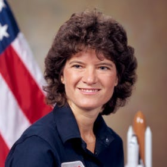
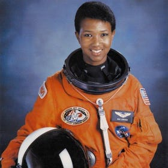
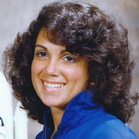

During the late 1940s, the Department of Defense pursued research and rocketry and upper atmospheric sciences as a means of assuring American leadership in technology. A major step forward came when President Dwight D. Eisenhower approved a plan to orbit a scientific satellite as part of the International Geophysical Year (IGY) for the period, July 1, 1957 to December 31, 1958, a cooperative effort to gather scientific data about the Earth. The Soviet Union quickly followed suit, announcing plans to orbit its own satellite.
The Naval Research Laboratory's Project Vanguard was chosen on 9 September 1955 to support the IGY effort, largely because it did not interfere with high-priority ballistic missile development programs. It used the non-military Viking rocket as its basis while an Army proposal to use the Redstone ballistic missile as the launch vehicle waited in the wings. Project Vanguard enjoyed exceptional publicity throughout the second half of 1955, and all of 1956, but the technological demands upon the program were too great and the funding levels too small to ensure success.
Source: NASA FactSheetSally Kristen Ride was an American physicist and astronaut. Born in Los Angeles, Ride joined NASA in 1978 and, at the age of 32, became the first American woman in space and still remains the youngest American astronaut to travel to space. After flying twice on the space shuttle Challenger, she left NASA in 1987. She worked for two years at Stanford University's Center for International Security and Arms Control, then the University of California, San Diego as a professor of physics, primarily researching non-linear optics and Thomson scattering.
Mae Jemison is an American engineer, physician and NASA astronaut. She became the first African American woman to travel in space when she went into orbit aboard the Space Shuttle Endeavour on September 12, 1992. After medical school and a brief general practice, Jemison served in the Peace Corps from 1985 until 1987, when she was selected by NASA to join the astronaut corps. She resigned from NASA in 1993 to found a company researching the application of technology to daily life. She has appeared on television several times, including as an actress in an episode of Star Trek: The Next Generation. She is a dancer and holds nine honorary doctorates in science, engineering, letters, and the humanities. She is the current principal of the 100 Year Starship organization.
Judith Resnik was an American engineer and a NASA astronaut who died when the Space Shuttle Challenger was destroyed during the launch of mission STS-51-L. Resnik was the second American female astronaut in space, logging 145 hours in orbit. She was also the first Jewish American in space, and the first Jewish woman of any nationality in space. She was a graduate of Carnegie Mellon University and had a Ph.D. in electrical engineering from the University of Maryland. The IEEE Judith Resnik Award for space engineering is named in her honor.
Fast facts about NASA and space! Source
In 2006 NASA admitted to having accidentally recorded over the original tapes of the moon landing. Fortunately NASA wasn't the only group recording. Copies found at CBS and Johnson Space Center are currently being restored.
Source: NASA FactSheet